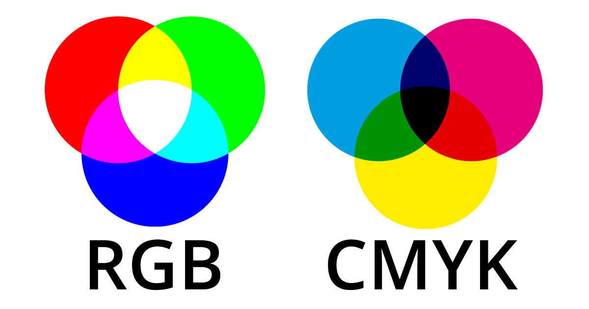

Kleurmodellen laten zien hoe kleuren worden gemaakt en gebruikt. Ze helpen ontwerpers om goede kleuren te kiezen. Ook zorgen ze ervoor dat klueren op een beeldscherm en op papier er hetzelfde uitzien.
Resolutie geeft aan hoeveel details je in op een scherm of in een afbeelding kunt zien. Hoe meer pixels, hoe scherper het beeld. Dat is belangrijk voor foto's, video's, beeldschermen en ook voor afdrukkingen op een printer.
Pixels zijn kleine gekleurde vakjes die samen een beeld vormen. Des te meer pixels, hoe duidelijker en scherper de afbeelding of video wordt. Pixels zijn heel belangrijk voor foto's, video's en andere digitale beelden.
RGB staat Rood, Groen en Blauw. Elke pixel op een scherm heeft drie lampjes in deze kleuren. Door de lampjes sterker of zwakker te laten branden, onstaan alle kleuren die er bestaan. Als je bijvoorbeeld rood even sterk laat branden met groen krijg je geel. Dat ziet er dan zo uit: Geel = rood: 100% + groen: 100% + blauw: 0% = geel. De codes van RGB worden niet in 100% gecodeerd, maar in decimalen. Omdat een pixel uit 8 bits bestaat loopt het getalreeks van 0 tot 255. Dit is zo omdat een byte 256 mogelijkheden in code kan hebben. Daarom noteer je geel als (255, 255, 0). Als alle lampjes uitstaan, dus alles staat op 0 (0, 0, 0) is het scherm zwart. Het RGB-model hoort bij apparaten met licht.
Bij printen is een wit achtergrond nodig, daarom gebruiken printers het CMYK-model. Dit model gebruikt de kleuren cyaan, magenta, geel en zwart. De inkt mengt kleuren door licht weg te nemen, zodat afdrukken scherp en vol detail zijn.
